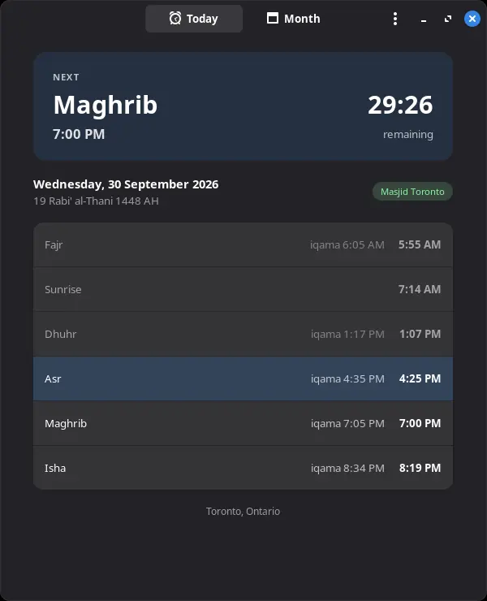
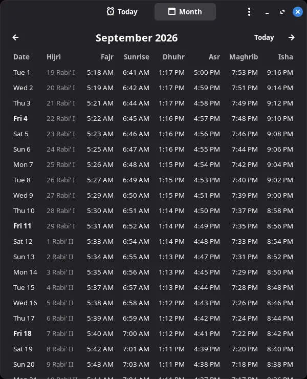
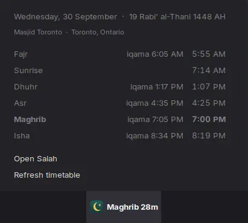
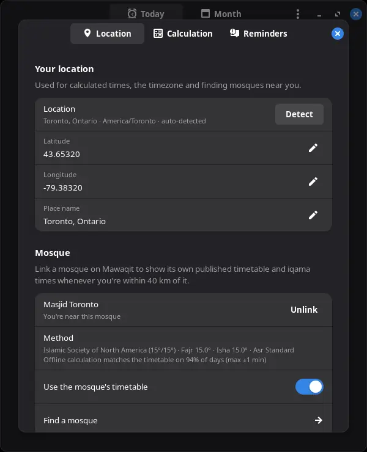

My desktop prayer-times app was calculating for Jakarta. I replaced it with one that uses my mosque's own timetable, and reproduces that timetable to the minute when it can't download it.
View on GitHub ↗Muslims pray five times a day, and each prayer has a window set by the sun's position. Fajr starts when the sky begins to lighten, Maghrib at sunset, Isha once twilight is gone. Those times move every day and depend on where you are, so most people rely on an app.
The applet on my Linux Mint panel never agreed with my mosque. When I finally opened its settings, the coordinates were for Jakarta, Indonesia. Fixing them helped, but Fajr was still up to 39 minutes off, because the applet used a different calculation method than the mosque. The mosque's timetable is the one I actually pray by, so that's the one the app should show.


There's no single correct prayer time. Fajr and Isha depend on which twilight angle you treat as "light" and "dark", and authorities disagree: 15° in North America, 18° for the Muslim World League, 19.5° in Egypt. Asr has two schools of thought. The same city can have timetables 30 minutes apart, and all of them are legitimate.
So Salah doesn't try to pick the right answer. Many mosques publish their full-year timetable on Mawaqit, so you link your mosque and Salah downloads that table, iqama times and Friday prayer included. It shows those times whenever you're within 40 km of the mosque. Anywhere else it calculates, using the method most common in the country you're in.

A downloaded table doesn't help when you're offline in January and next year's timetable hasn't been fetched yet. For that, Salah needs to calculate the mosque's times itself, which means knowing how the mosque calculates them.
Mosques rarely say. So Salah fits the published calendar: it sweeps Fajr and Isha angles from 10° to 21° in tenth-degree steps, tries both Asr schools, and measures fixed minute offsets on Dhuhr and Maghrib. It keeps whichever combination reproduces the most days exactly. For my mosque, that came back as ISNA (15°/15°) with standard Asr.
Some mosques set their times by hand, rounding to the nearest five minutes or holding Isha fixed all summer. The fit catches that. If fewer than 90% of times match, or any is off by more than two minutes, Salah marks the mosque as not reproducible and falls back to the standard method instead of pretending.
With ISNA and nearest-minute rounding, five of the six daily times matched the mosque on all 365 days. Asr matched on 118. The rest were off by one or two minutes in both directions, which looked like noise.
It wasn't noise. When I averaged the error by month, it traced a smooth curve through the year: about a minute late in February and March, about a minute early in October, close to zero at the solstices. That's the shape of the rate at which the sun's declination changes, which is fastest at the equinoxes and zero at the solstices. The error only makes sense if the sun's position was being measured at a different moment.
Evaluating the declination one day earlier fixed most of it. Scanning the offset in finer steps landed on 0.9 days, and exact matches jumped from 89% to 99.2%. Somewhere in Mawaqit's pipeline, Asr is computed from the sun's position about a day early. Salah reproduces that quirk only when it's standing in for a Mawaqit mosque, and uses the textbook formula everywhere else.
The last misses are all Asr, by one minute, on days where the true time sits within a few seconds of a minute boundary.
Above the Arctic Circle the sun doesn't set in June or rise in December, so there's no sunset to anchor Maghrib to. On those days Salah uses the times for latitude 65° and says so on screen. Further south, where the sun never gets 18° below the horizon in summer, it uses the angle-based high-latitude rule for Fajr and Isha.
Hijri dates come from ICU's Umm al-Qura calendar. Python can't reach it, so Salah asks GJS (which ships with Cinnamon) to convert the whole year once and caches the result. My first version used the tabular Islamic calendar, which put today two days off.
